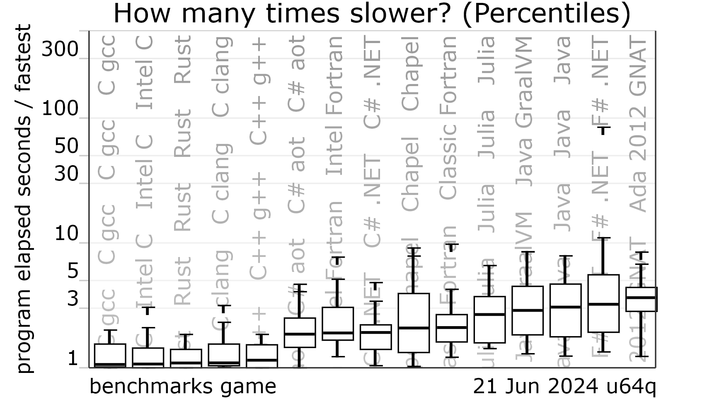

The case for using Rust (as a marine engineer)
Nick Lamprinidis
Created: 2024-06-26 Wed 10:11
Table of Contents
- 1. About me
- 2. Funny story
- 3. So what happened?
- 4. So what happened? (pt 2/2)
- 5. What is rust?
- 6. How fast?
- 7. Safety
- 8. example 1
- 9. example 1 (Cont)
- 10. Run result
- 11. Run result (Cont)
- 12. example 2
- 13. The error
- 14. The error (Cont)
- 15. Final result
- 16. example 3
- 17. example 3 (Cont)
- 18. example 3 (Cont)
- 19. Cons
- 20. Some general rule-of-thumbs
- 21. Numerical Example
- 22. Questions?
- 23. Repo & contact info
1. About me
- Working at ABS since 2018.
- Likes all things numerical.
- Not affiliated with the rust foundation.
2. Funny story
 (youtube link: see last slide)
(youtube link: see last slide)
3. So what happened?
- Ported ABS’s weather data processing library into rust.
- x10 times speed up vs julias NCDatasets library. https://github.com/Alexander-Barth/NCDatasets.jl
- Enter the rabit hole.

4. So what happened? (pt 2/2)
- Eventually ported everything into rust.
- Weather hindcast/forecast analysis.
- Orthodrome & pathfinding algorithms.
- ML library.
- Vessel Performance modeling.
5. What is rust?
- Initially developed by mozilla to solve the c++ problems in Firefox
- IT IS FAST
- Memory safety guaranteed
- cargo (package manager) is the best
- The best error error messages in any language
- RELIABLE (so much so it is boring)!
- Fearless concurrency.
- Great ecosystem + tooling.
- Open source.
6. How fast?

7. Safety
- Pointers checked at compile-time
- Thread-safety
- No hidden states
- Beautifull type system
- Error handling at its best
8. example 1
fn main() {
let lista = vec![Food::Fasolakia(3), Food::Burger, Food::Gyros];
let yummy_foods = yummy(&lista);
println!("{:?}", yummy_foods);
}
fn yummy(lista: &Vec<Food>) -> Vec<bool> {// returns if a food is yummy or not
let is_yummy = lista.iter().map(|food| match food {
Food::Fasolakia(_) => false,
Food::Burger => true,
});
is_yummy.collect()
}
9. example 1 (Cont)
#[derive(PartialEq)]
enum Food {
Fasolakia(u16),
Burger,
Gyros,
}
10. Run result
cargo run Compiling example1 v0.1.0 (C:\Users\NLamprinidis\Downloads\opada-2024\example1) error[E0004]: non-exhaustive patterns: `&Food::Gyros` not covered --> src/main.rs:9:50 | 9 | let is_yummy = lista.iter().map(|food| match food { | ^^^^ pattern `&Food::Gyros` not covered | note: `Food` defined here --> src/main.rs:18:6 | 18 | enum Food { | ^^^^ ...
11. Run result (Cont)
21 | Gyros, | ----- not covered = note: the matched value is of type `&Food` help: ensure that all possible cases are being handled by adding a match arm with a wildcard pattern or an explicit pattern as shown | 11 ~ Food::Burger => true, 12 ~ &Food::Gyros => todo!(), | For more information about this error, try `rustc --explain E0004`.
12. example 2
fn main() {
let x = vec![1.0f32, 2.0, 3.0];
let z = zero(x);
let w = zero(x);
println!("Hurray!!");
}
fn zero(x: Vec<f32>) -> Vec<f32> {
x.iter().map(|a| a * 0.0).collect::<Vec<f32>>()
}
13. The error
error[E0382]: use of moved value: `x` --> src/main.rs:5:18 | 2 | let x = vec![1.0f32, 2.0, 3.0]; | - move occurs because `x` has type `Vec<f32>`, which does not implement the `Copy` trait 4 | let z = zero(x); | - value moved here 5 | let w = zero(x); | ^ value used here after move |
14. The error (Cont)
note: consider changing this parameter type in function `zero` to borrow instead if owning the value isn't necessary --> src/main.rs:9:12 | 9 | fn zero(x: Vec<f32>) -> Vec<f32> { | ---- ^^^^^^^^ this parameter takes ownership of the value | | | in this function help: consider cloning the value if the performance cost is acceptable | 4 | let z = zero(x.clone()); | ++++++++
15. Final result
fn main() {
let x = vec![1.0f32, 2.0, 3.0];
let y = vec![4.0f32, 5.0, 6.0];
let z = zero(&x);
let w = zero(&x);
println!("Hurray!!");
}
fn zero(x: &Vec<f32>) -> Vec<f32> {
x.iter().map(|a| a * 0.0).collect::<Vec<f32>>()
}
16. example 3
// An integer division that doesn't `panic!`
fn checked_division(dividend: i32, divisor: i32) -> Option<i32> {
if divisor == 0 {
// Failure is represented as the `None` variant
None
} else {
// Result is wrapped in a `Some` variant
Some(dividend / divisor)
}
}
17. example 3 (Cont)
// This function handles a division that may not succeed
fn try_division(dividend: i32, divisor: i32) {
// `Option` values can be pattern matched, just like other enums
match checked_division(dividend, divisor) {
None => println!("{} / {} failed!", dividend, divisor),
Some(quotient) => {
println!("{} / {} = {}", dividend, divisor, quotient)
},
}
}
18. example 3 (Cont)
fn main() {
let x = checked_division(4, 2);
let y = checked_division(1, 0);
// Unwrapping a `Some` variant will extract the value wrapped.
println!("x is {:?}", x.unwrap());
// proper error handling
match y {
Some(v) => println!("y is {:?}", v),
None => println!("y is None"),
}
// Unwrapping a `None` variant will `panic!`
println!("y is {:?}", y.unwrap());
}
19. Cons
- Slower dev time (debatable).
- Very slow compile times.
- Syntax is verbose (kind of).
- Steep learning curve.
20. Some general rule-of-thumbs
- Only use Vec<stuff> and structs to store data
- Functions on the above should accept &Vec<stuff> and &Struct
- Ignore Generics and Traits for now
- Dont mind .clone()
21. Numerical Example
min \(L=(x+y)^2\)
given that \(x^2+y^2=1\)
Rewritting this as lagrange multipliers
min \(L=(x+y)^2+\lambda*(x^2+y^2)\)
Rewritting this as lagrange multipliers (heuristic)
min \(L=(x+y)^2+\lambda*(x^2+y^2)^2\)
22. Questions?

23. Repo & contact info
- github repo: https://github.com/krestomantsi/opada-2024
- email: nlampri@gmail.com
- (youtube link: https://www.youtube.com/watch?v=0JkbNFpXlXc&lc=UgwQJyFb6m1vBkg431d4AaABAg.9sIktyoda_P9t3lAdkUZLB )